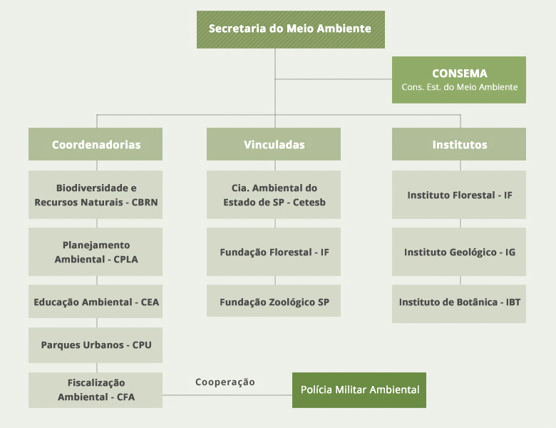

Orgãos responsáveis pela preservação ambiental
Quais são os órgãos fiscalizadores do meio ambiente e suas responsabilidades
O Brasil é um dos países mais ricos quando o assunto é biodiversidade. Possuímos a maior e mais diversa floresta tropical do mundo, a Amazônia, além de diversos outros biomas riquíssimos, como a Caatinga, Zona da Mata, Floresta de Araucária, Cerrado, Pantanal, Pampas e Mata Atlântica. Isso sem contar reservas de água doce que figura entre as maiores do mundo. Para proteger todas estas riquezas, existem diversos órgãos fiscalizadores do meio ambiente no Brasil. Pensando nisso foi criados orgãos protetores.
Hierarquia de órgãos fiscalizadores na esfera federal
• Sistema Nacional do Meio Ambiente (SISNAMA): O SISNAMA é composto por diversos outros órgãos reguladores do meio ambiente, citados a baixo.
• Conselho do Governo: O presidente da república na elaboração de políticas públicas voltadas ao meio ambiente;
• Conselho Nacional do Meio Ambiente (CONAMA): Um dos órgãos fiscalizadores do meio ambiente mais importantes, pois propõe diretrizes, normas e padrões para um meio ambiente equilibrado;
• Ministério do Meio Ambiente: Um dos órgãos fiscalizadores do meio ambiente mais importantes, pois propõe diretrizes, normas e padrões para um meio ambiente equilibrado;
• Instituto do Meio Ambiente (IBAMA): Realiza a fiscalização, controle e estímulo dos recursos naturais.
Órgãos colegiados
Apesar de o Ministério do Meio Ambiente ser considerado a instituição máxima de proteção ambiental, existe uma série de entidades colegiadas ao mesmo que também são órgãos fiscalizadores do meio ambiente.
• Conselho de Gestão do Patrimônio Genético: Prevê as normas de acesso ao patrimônio genético brasileiro e conhecimentos tradicionais;
• Comissão de Gestão de Florestas Públicas: Assessora, avalia e propõe diretrizes para florestas dessa natureza;
• Conselho Nacional de Recursos Hídricos: Um dos órgãos fiscalizadores do meio ambiente mais importantes, pois é responsável pela efetivação da gestão de recursos hídricos no País;
• Comissão Nacional de Biodiversidade: Rege a conservação e utilização de recursos naturais, bem como a repartição igualitária de sua utilização e conhecimentos associados;
• Comissão Nacional do Programa Cerrado Sustentável: Acompanha as ações de manejo e recuperação sustentável do cerrado, assim como a valorização dos povos tradicionais que habitam este bioma;
• Fundo Nacional do Meio Ambiente: Não se trata necessariamente de um dos órgãos fiscalizadores do meio ambiente, mas prevê o financiamento para a implementação da Política Nacional do Meio Ambiente.
O sistema
O Sistema Ambiental Paulista é responsável pela gestão ambiental no território do estado de São Paulo.
Na missão de executar políticas que promovam um meio ambiente ecologicamente equilibrado, à presente e às futuras gerações, assegurando condições ao desenvolvimento sustentável.
O sistema tem a Secretaria de Infraestrutura e Meio Ambiente como órgão central e é composto por coordenadorias, institutos, fundações, Cetesb e Polícia Militar Ambiental.
Qual o papel do Ministério do Meio Ambiente?
É de responsabilidade do Ministério do Meio Ambiente (MMA) conhecer, proteger e recuperar o meio ambiente dentro do território brasileiro. Segundo o regimento do MMA, suas competências são:
- A política nacional do meio ambiente e dos recursos hídricos;
- A política de preservação, conservação e utilização sustentável de ecossistemas, e biodiversidade e florestas;
- A proposição de estratégias, mecanismos e instrumentos econômicos e sociais para a melhoria da qualidade ambiental e o uso sustentável dos recursos naturais;
- Políticas para a integração do meio ambiente e produção;
- Políticas e programas ambientais para a Amazônia Legal;
- O zoneamento ecológico-econômico.
A preservação do meio ambiente no Brasil é regulamentada pela Política Nacional do Meio Ambiente (Lei 6.938/1981), que foi criada para preservar e melhorar a qualidade ambiental. Segundo essa lei, o meio ambiente é patrimônio público e deve ser protegido, pois seu uso é coletivo. Isso quer dizer que, cabe ao Estado brasileiro preservar as riquezas naturais e garantir que as pessoas possam usufruir da natureza, tanto as gerações presentes quanto as futuras.